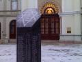

A két ünnep között néhány
napot a barátnõmmel a gyönyörûséges történelmi belvárossal rendelkezõ Gyõrött töltöttem. A barokk
utcácskák, az ezer forintért mért felesek és a tizenhétezer forintos ebéd mind csodálatosan
bizonyították, hogy még a fagyos, sötét téli napokon is van élet Mária Terézia egykori szabad
királyi városában.
Néhány nappal az utazás elõtt vettem egy új bakancsot, úgyhogy
remek alkalom volt e gyõri kiruccanás arra, hogy bejárassam, illetve leteszteljem. Jól
teljesített: mókás látványt nyújtottam a belvárosban tartózkodó fiatalok és turisták között,
a Rába Hotel recepcióján pedig külön érdeklõdéssel figyelték a közéjük nem tartozót. A
hangulatos belga sörözõben a fõpincér például tesztelgetni is próbált, hogy vajon bevallom-e
a fogyasztást, úgyhogy bõven volt mit küzdenem az elõítéletek ellen. A könyvesboltban az
eladó például nem is leplezte meglepõdöttségét, amikor válogattam egy keveset, pedig csak
decemberben negyvenezerért vásároltam már könyveket. Most már az elkövetkezõ néhány hónapra
van olvasgatnivalóm, csak a hozzá szükséges idõt szeretném még valahol beszerezni, ha
lehetséges volna.
A napokat egyébként fõként sétálgatással, nézelõdéssel töltöttük. A
Mozartról elnevezett kávézóban csodálatos tortaszeletet szervíroztak mindennap, a kis
utcákból hirtelen elõtûnõ látványosságok pedig mindig adtak okot a csevegésre vagy éppen
jóízû veszekedésre. A Jedlik Ányos Istvánról (a dinamó mellett például a szódavíz és több más
feltalálójáról) elnevezett utcában például Jedlik mókás haláláról meséltem kedvesemnek
(tudniillik bencés szerzetes tudósunk meglehetõsen kis termettel rendelkezett, a pottyantós
vécé lyuka pedig túl nagynak bizonyult), amiért persze kikaptam. Vannak tabuk, amikrõl nem
lehet beszélni.
Számomra legérdekesebbnek az a nap bizonyult, amikor a különbözõ
vallási irányzatok szent épületeit látogattuk meg. A bencés templomba egészen egyszerûen nem
lehetett bejutni egész gyõri tartózkodásunk alatt, de szerencsére nem minden irányzat istene
ilyen kirekesztõ. A karmelita templom egészen egyszerûen csodálatos, a szentképek még a
hozzám hasonló gyönge ateistákat (a nem valódi istentagadó: aki csak azért nem hisz, mert
nem látja bizonyítottnak Isten létezését; s nem azért, mert bizonyítottnak látja a
nemlétét!), autodeistákat is megindítja. Nagy kedvem lett gyönyörködni a szobrokban,
oltárokban, és ilyenkor érti meg az ember a vallásosság valódi értelmét: nem kell
bizonygatni, hogy a vallásban erõ van. Érezni, hogy ezek a szentségek föltöltik azokat
energiával, akik hisznek bennük. A különbség csak abban adódik, hogy hol látjuk az energia forrását:
szerintem a hívõ szerint az erõ Istentõl érkezik, szerintem pedig a hiten keresztül az
emberben lévõ már meglévõ energia szabadul föl a vallás által. Különbség azonban nincsen;
mindezt lehet meglátni az ilyen szent földeken, és a világra úgy lehet tekinteni, ha kicsit
meg tudsz pihenni, mintha fölülrõl figyelnéd az egész zagyva összevisszaságot s talán már nem
lesz olyan fontos a mindennapi aggodalom, mint kint volt. Valamiféle pajzs egy ilyen épület.
Már korával is tiszteletet parancsol és erõt sugárzik, és igazán nehéz apróságok miatt
aggódni egy olyan építményben, amely könnyedén túlélt korokat, fosztogatókat, árulók
háborúit és minket is túl fog élni.
Meglátogattuk a gyõri bazilikát is: a Szent
István által székesegyházzá nyilvánított épületet II. János Pál pápa 1996-os látogatása
emelte bazilikává. A csodálatos és lélegzetelállító klasszicista-gótikus épületben az ember
parányi, de mégis erõs porszemnek érzi magát. Az ilyen épület díszítései és aurája révén
mindig ünnepi hangulatot tükröz, de a roppant fenyõfák a karácsony szelíd szentségével
emelték istenivé a pillanatot. A bazilika északi mellékhajójában az 1655-ben Írországból
hozzánk hozott Vérrel Könnyezõ Szûz Mária Kép található, de itt õrzik a Szent László-hermát
is, amely mellkasán Árpád-házi királyunk prenácizmusának bizonyítéka, árpádsávos jelkép
látható.
A hermában õrzik Szent László koponyacsontjának egy
darabját Szintén a bazilikában tekinthetõ meg a boldoggá avatott Apor Vilmos püspök
szarkofágja. Boldog Vilmost szovjet katonák lõtték agyon, mikor megpróbálta megvédeni a
templomba menekülteket, mikor a nõk közül válogattak a férgek.
Gondoltuk, mi nem lehetünk
kirekesztõek, ezért ezután a gyõri zsinagóga épületét is megkerestük. Nem volt nehéz dolgunk:
a házak fölé emelkedõ arany dávidcsillag mutatta nekünk az utat. De követve azt, nem az éppen
megszületett Megváltót, hanem különbözõ O¶wiêcim-emlékmûveket találtunk. Úgy tûnik, a gyõri
zsidók csak Auschwitzet ismerik náci koncentrációs táborként, mert egyik másikról sem esik
szó, csak itt haltak meg. Azért nem kell izgulni, a pontos hely meghatározása nagyjából
húszévente változik.
A gyermekáldozatoknak szentelt emlékoszlop felirata:
„Auschwitz
1945–2007”. Nem értjük. A XIX. században szecessziós-historikus
stílusban épült zsinagóga kilóg a sorból: ide nem mehettünk be ingyen. Ezer forintot fizettünk, de
akkor, ha fényképezni akartunk volna, még háromszáz forintot elkért volna a bejáratnál üldögélõ
hölgy. Pedig belül igazán semmi sincs: dávidcsillagok és héber feliratok, meg egy pódium,
amelyen lelki szemeim elõtt idõs rabbi beszél a gojim szerepérõl a szupremácia fényében.
Furcsán néztek rám: a bakancs, bomber és gyalogló itt nem kedvelt vendégek, ráadásul a
pulóveremen lévõ smiley sem a szokásos volt. A zsinagógát pedig elég drágán újították föl:
Gyõr városának volt rá kétmilliárd forintja a 2000-es évek elején.
Tényleg nem lett
volna mit nézni, és mégis pénzt kértek érte, úgyhogy kitettek pár képet is. Természetesen a
zsidók által erõltetett
entartete Kunst jelent meg itt is:
Ország Lili-, Vasilescu- és Vasarely-képeket aggattak a falra. Fekete háttéren kék vonal, a
cím: Két vonal. Majd két lépéssel arrébb egy két évvel késõbbi kép, amelyen ugyanúgy fekete
hátteren két vonalat látunk ugyanattól az alkotótól: Két vonal II. Nos, errõl van itt
szó.
Sehol máshol nem kértek belépõjegyet, még a Széchényi Patikában (sic, itt nem
Széchenyirõl, hanem Széchényirõl van szó, de mi, übermagyarok jól ismerjük a különbséget) sem,
pedig ott is több látnivaló volt. Régi patikaeszközök és olyan szép freskó, amely miatt a ma
is mûködõ patikába legszívesebben minden egyes nap járna az ember.
A hazautazás is
emlékezetes volt. Gyõrött kerültem a hozzám hasonlóan öltözködõ srácokat: eleve kevesen
voltak, de általában az ilyenek óriási csalódást jelentenek. Nem is ismert föl senki egészen a
hazafelé tartó vonatútig, ahol a remek MÁV remek Intercityjén sem akadt ülõhely, de valaki
hirtelen elém toppant és döbbenettõl vegyes arccal kérdezte, hogy én vagyok-e én. És igen!
Legalább hazáig nem unatkoztam, és nem kellett a mazochizmusból vásárolt Népszavámat olvasnom.
(Az újságosnál olyan lapot kértem, amit zsidók adnak ki, erre annyit mondott, hogy vegyem le
bármelyiket a polcról.)
Itthon már tudtam, hogy Budapesten vagyok. A zebrán behajtott a
zöldön átsétáló tömegbe egy igazán nagy kocsival valami vágott szemû. Megfigyelted, hogy
ezeknek mindig nagy dög járgányaik vannak? Valami nõ vezette, akit Indonéziában három centért
kúrnának a szexturisták, de itt nagyon fontos ember lett. Sajnos nem sikerült lerúgnom a
visszapillantóját, pedig akkor talán megállt volna, úgy meg a vele utazó gyerekkel is
foglalkozván tehettem volna valamit a hozzánk is beférkõzõ multikultúra ellen
valamicskét.
Anyám aztán fölhívott, hogy egy gyermekruha-kereskedésben napi nyolcórás
és heti ötnapos munkára havi (azaz havonta értendõ!) 35 000 forintot ajánlottak neki. Mondjuk,
minek kell neki rokkantnak lennie, ugye. Szóval rövid kikapcsolódás volt, s mire elmúlt volna a
hányingerem, megint itthon voltam. Drága magyar hon büdös fõvárosában.